By Ishir Garg
This project explores Neural Radiance Fields (NeRF), a revolutionary approach to 3D scene representation and novel view synthesis. NeRF uses a neural network to represent a continuous 3D scene as a function that maps 3D coordinates and viewing directions to color and density. Through inverse rendering from multi-view calibrated images, we can train a NeRF to synthesize photorealistic novel views of a scene. This project covers the full pipeline from camera calibration and 3D scanning to training and rendering neural radiance fields.
The first step in building a NeRF is to calibrate the camera to understand its intrinsic parameters (focal length, principal point) and distortion coefficients. We use ArUco tags, which are visual tracking targets that provide reliable detection of 3D keypoints across different images.
cv2.calibrateCamera() to compute camera
intrinsics matrix $K$ and distortion coefficients.
The calibration process handles cases where tags aren't detected in some images by skipping those images and only using successful detections. This robustness is crucial for real-world data collection.
For this project, I captured a 3D scan of a purple penguin using a single ArUco tag placed next to the object. I captured approximately 50 images from different angles, following best practices:
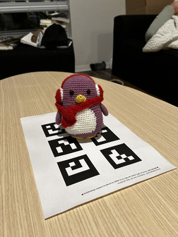
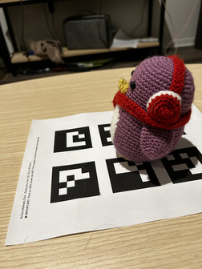
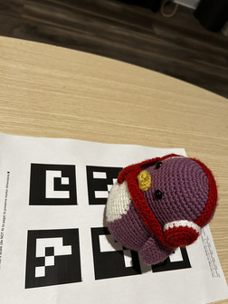
With calibrated camera intrinsics, I estimated the camera pose (position and orientation) for each image using the Perspective-n-Point (PnP) problem. For each image, I:
cv2.aruco.detectMarkers()
cv2.solvePnP() to estimate the camera's
extrinsic parameters (rotation and
translation) relative to the tag's coordinate systemGiven 3D points in world coordinates and their 2D projections in an image, PnP solves for the camera's pose. The transformation from world to camera coordinates is: \[ \mathbf{x}_c = \mathbf{R} \mathbf{x}_w + \mathbf{t} \] where $\mathbf{R}$ is the rotation matrix and $\mathbf{t}$ is the translation vector. The inverse transformation (c2w) is used for NeRF training.
I visualized the camera poses using Viser, which shows the camera frustums and their positions in 3D space. This visualization helps verify that the pose estimation is correct and that cameras are distributed well around the object.
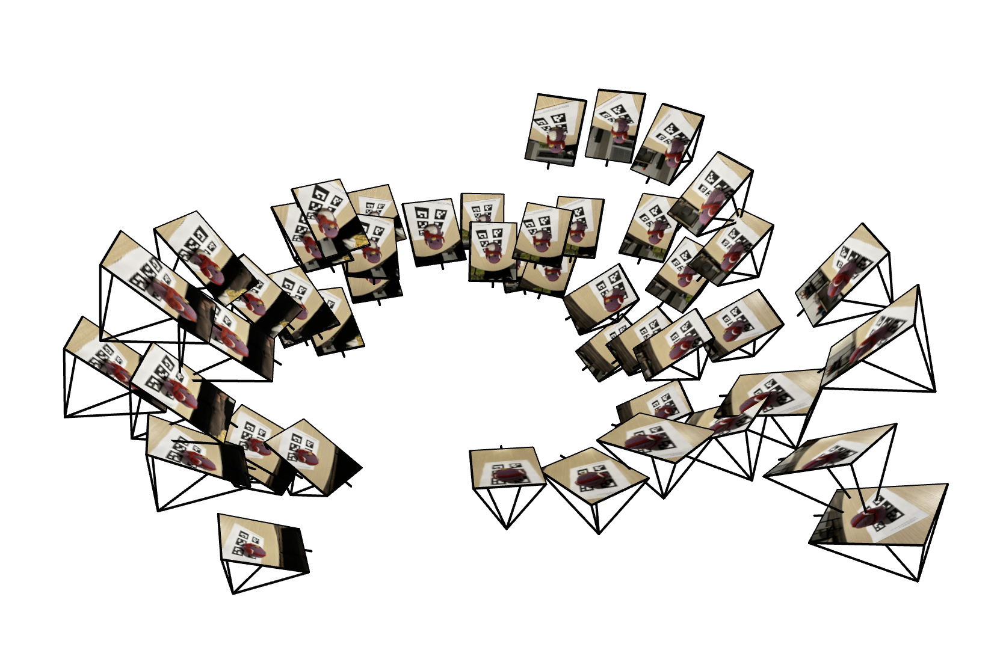
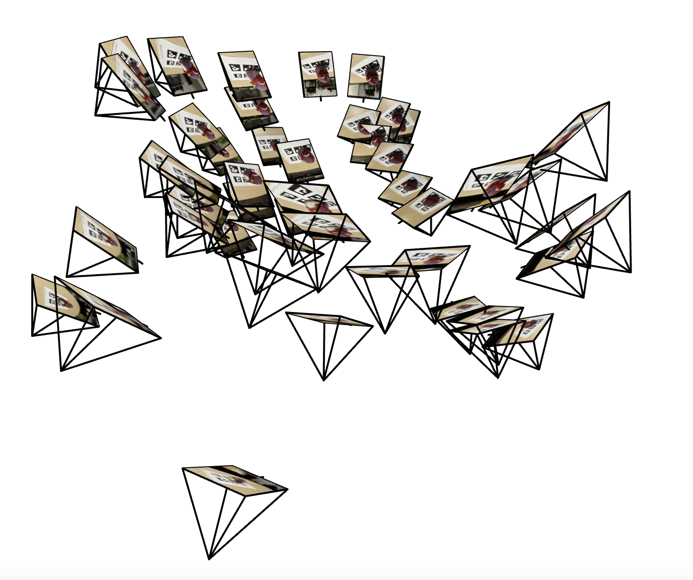
The visualizations show cameras arranged in a semi-circular arc around the object, with each camera frustum displaying the corresponding captured image. This confirms that the pose estimation successfully recovered the camera positions and orientations.
Before training the NeRF, I undistorted all images using
cv2.undistort() to remove lens
distortion, as NeRF assumes a perfect pinhole camera model. I
also handled black boundaries that can
appear after undistortion by using
cv2.getOptimalNewCameraMatrix() and updating the
principal point to account for any cropping.
The final dataset was saved in .npz format with the
following structure:
images_train: Training images (N_train, H, W,
3) in 0-255 rangec2ws_train: Camera-to-world transformation
matrices (N_train, 4, 4)images_val: Validation images (N_val, H, W, 3)
c2ws_val: Validation camera poses (N_val, 4, 4)
c2ws_test: Test camera poses for novel view
rendering (N_test, 4, 4)focal: Camera focal length (float)Before tackling 3D NeRF, we start with a simpler 2D problem: fitting a neural field to represent a single 2D image. This helps us understand the core concepts of neural fields, positional encoding, and the training process.
Positional encoding expands the input dimensionality using sinusoidal functions: \[ \gamma(\mathbf{p}) = \left[\sin(2^0 \pi \mathbf{p}), \cos(2^0 \pi \mathbf{p}), \ldots, \sin(2^{L-1} \pi \mathbf{p}), \cos(2^{L-1} \pi \mathbf{p})\right] \] where $L$ is the maximum frequency level. We also concatenate the original input, so for $L=10$ and 2D input, the encoded vector has dimension $2 + 2 \times 2 \times 10 = 42$.
This encoding helps the network learn high-frequency details in the image, which is crucial for representing fine textures and edges.
I trained the neural field on the provided test image. The training progression shows how the network gradually learns to represent the image: these images use a network width of 256 and max frequency $L=10$.
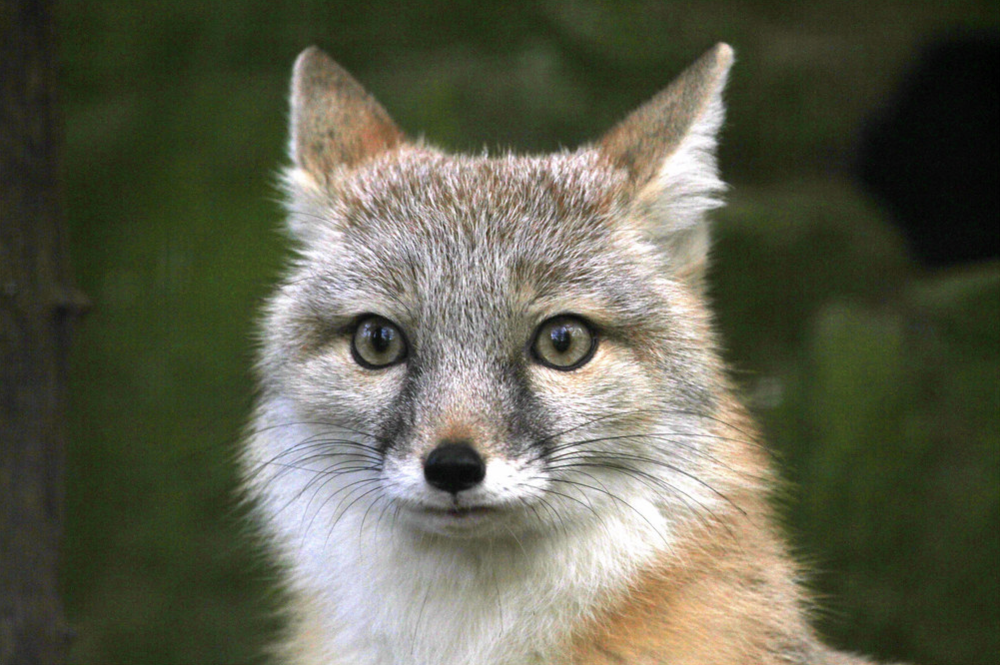
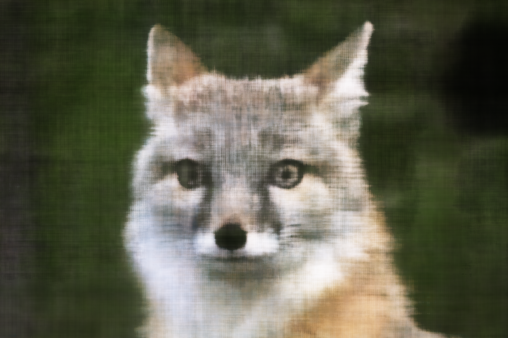
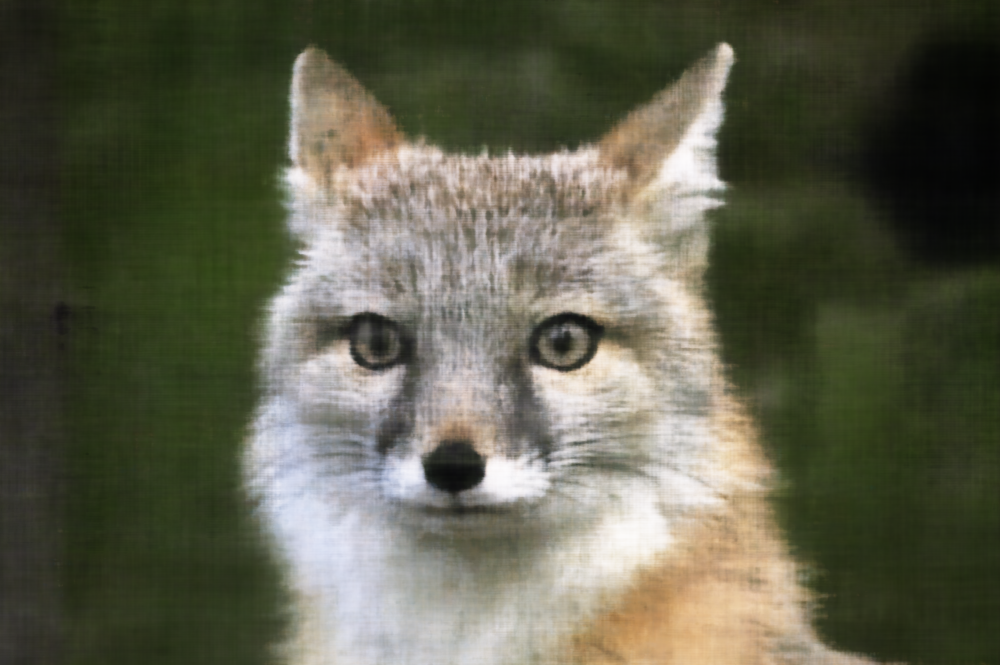
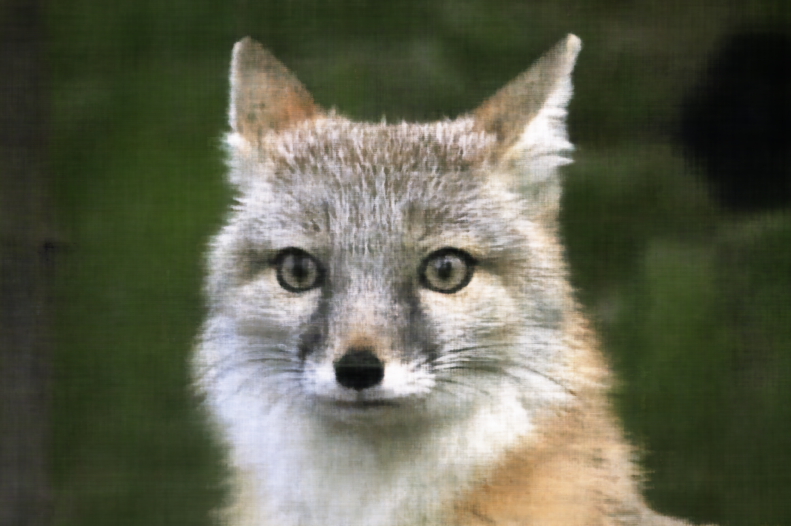
The network starts with random noise and gradually learns the image structure. Early iterations capture low-frequency content (colors and general shapes), while later iterations refine high-frequency details.
I also trained the network on a custom image to demonstrate generalization. The training progression shows similar behavior for 256 width and $L=10$.:
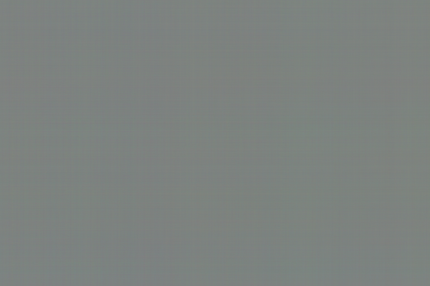
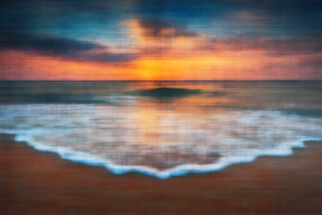
I explored the effect of different hyperparameters on reconstruction quality. Below are results for different combinations of max positional encoding frequency ($L$) and network width:
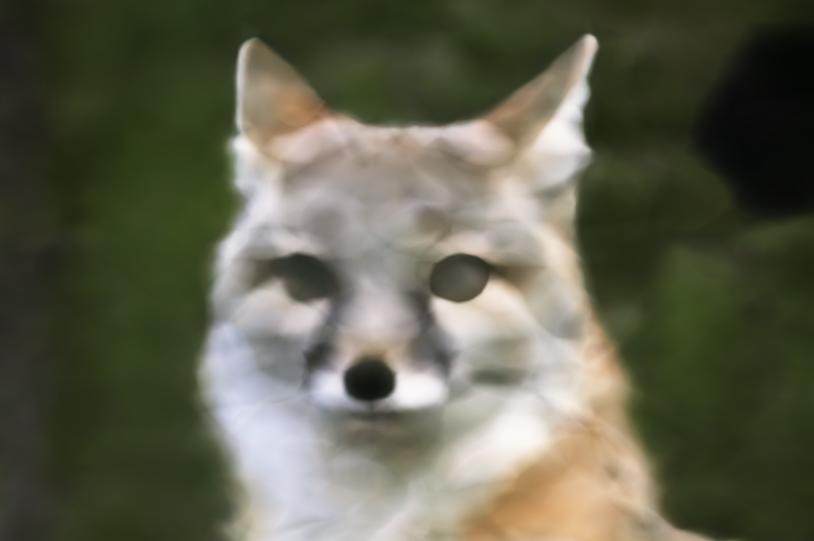
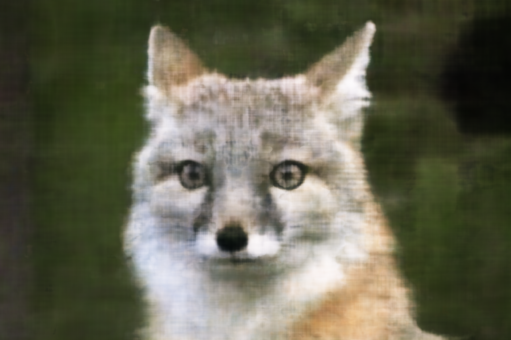
Peak Signal-to-Noise Ratio (PSNR) measures reconstruction quality. For normalized images [0, 1], PSNR is computed as: \[ \text{PSNR} = -10 \log_{10}(\text{MSE}) \]
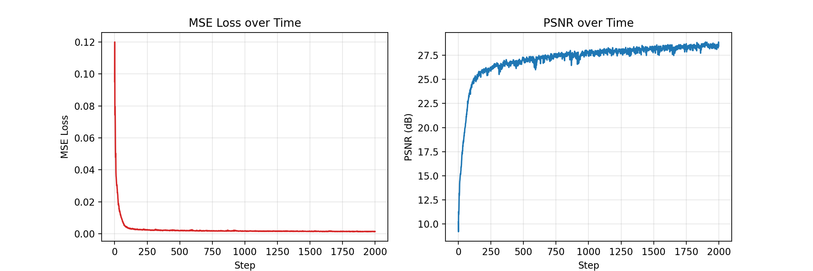
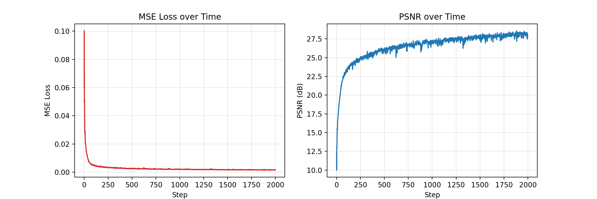
The PSNR curves show rapid improvement in early iterations, then gradual refinement. The network converges to high PSNR values (typically 25-30 dB for good reconstructions), indicating successful learning of the image representation.
Now we extend the neural field to 3D, creating a Neural Radiance Field that can represent a 3D scene from multi-view images. This is the core NeRF algorithm.
The camera-to-world (c2w) transformation matrix converts points from camera space to world space: \[ \mathbf{x}_w = \mathbf{R}_{c2w} \mathbf{x}_c + \mathbf{t}_{c2w} \] where $\mathbf{R}_{c2w}$ is the rotation matrix and $\mathbf{t}_{c2w}$ is the translation vector. I implemented a batched transformation function that supports efficient processing of multiple points.
For a pinhole camera with intrinsic matrix $K$, we invert the projection to convert pixel coordinates back to camera space: \[ \begin{bmatrix} x_c \\ y_c \\ z_c \end{bmatrix} = K^{-1} \begin{bmatrix} u \\ v \\ 1 \end{bmatrix} \cdot s \] where $s$ is the depth. For ray generation, we typically set $s=1$ to get points at unit depth.
A ray is defined by an origin $\mathbf{o}$ and direction $\mathbf{d}$. For a pixel at $(u, v)$:
Similar to Part 1, we randomly sample pixels (and thus rays) from the training images. At each iteration, I sample $N$ rays from all training images. The implementation accounts for the offset from image coordinates to pixel centers by adding 0.5 to the UV coordinates.
Each ray is discretized into samples along its length. I use uniform sampling between near and far planes: \[ t_i = \text{near} + \frac{i}{N-1} (\text{far} - \text{near}) \] The 3D coordinates are then: $\mathbf{x}_i = \mathbf{o} + t_i \mathbf{d}$.
To prevent overfitting and ensure all locations along the ray are explored during training, I add small random perturbations to the sample positions: \[ t_i' = t_i + \mathcal{U}(0, \Delta t) \] where $\Delta t$ is the interval width. This perturbation is only applied during training, not during inference.
I visualized the rays and samples to verify the implementation. The visualization shows cameras, sampled rays, and 3D sample points:
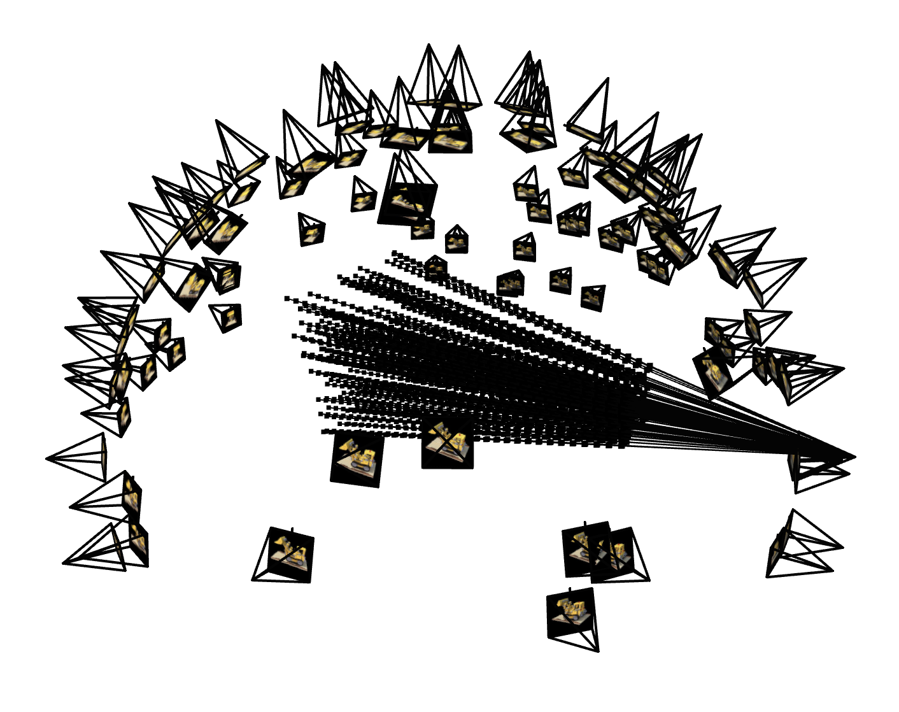
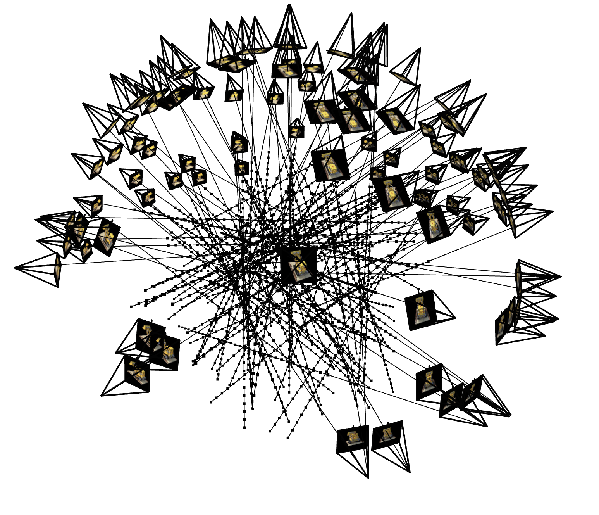
Volume rendering composites the colors and densities along each ray to produce the final pixel color. The continuous volume rendering equation is: \[ C(\mathbf{r}) = \int_{t_n}^{t_f} T(t) \sigma(\mathbf{r}(t)) \mathbf{c}(\mathbf{r}(t), \mathbf{d}) dt \] where $T(t) = \exp\left(-\int_{t_n}^{t} \sigma(\mathbf{r}(s)) ds\right)$ is the transmittance (probability the ray travels from $t_n$ to $t$ without hitting anything).
The discrete approximation used in practice is: \[ \hat{C}(\mathbf{r}) = \sum_{i=1}^{N} T_i (1 - \exp(-\sigma_i \delta_i)) \mathbf{c}_i \] where:
I trained the NeRF on the provided Lego dataset (200×200 resolution, 100 training images). Training parameters:
The network gradually learns to represent the 3D scene. Early iterations show blurry, low-frequency reconstructions, while later iterations capture fine details:
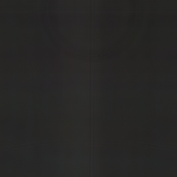
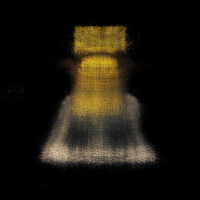
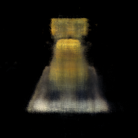
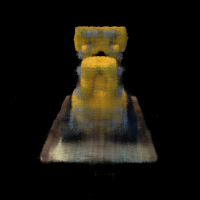
Validation images show how well the NeRF generalizes to unseen camera poses:
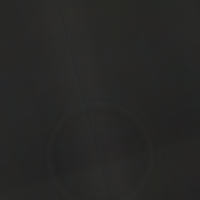
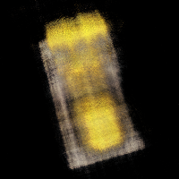
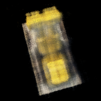
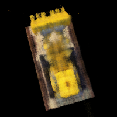
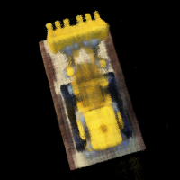
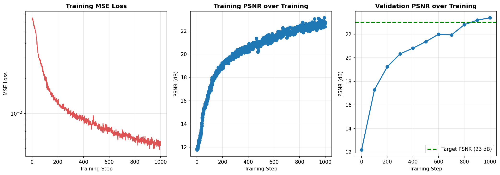
The validation PSNR reaches above 23 dB, meeting the project requirements. The loss decreases consistently, and the PSNR improves steadily, indicating successful training.
After training, I rendered novel views using the test camera poses. The NeRF successfully synthesizes photorealistic views from arbitrary camera positions:
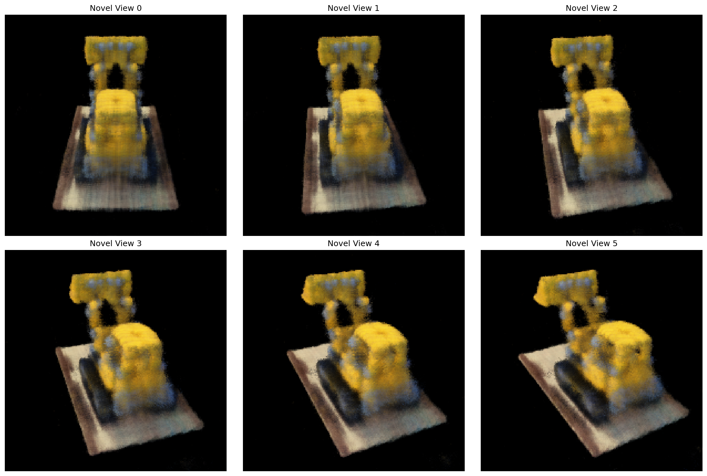
I created a video showing the Lego scene from a spherical camera path, demonstrating smooth novel view synthesis:
I trained a NeRF on my own captured dataset (the purple penguin). This required several adjustments from the Lego dataset:
The training shows gradual improvement in reconstruction quality:
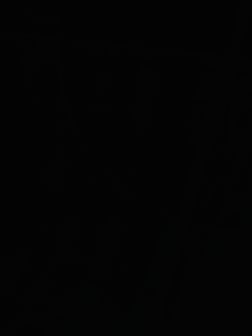
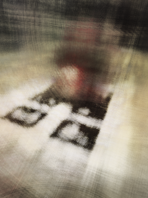
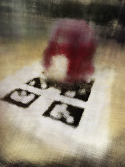
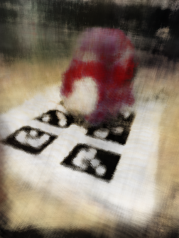
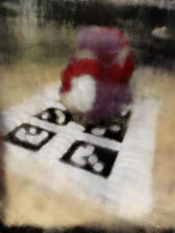
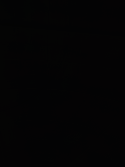
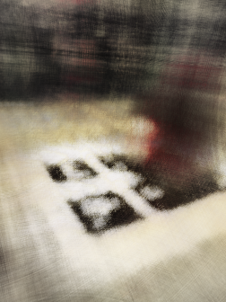
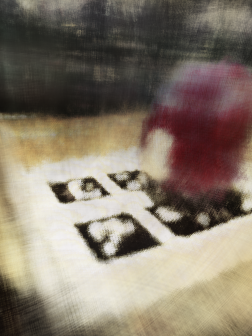
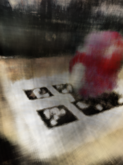
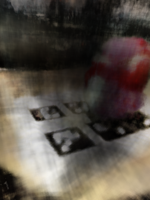
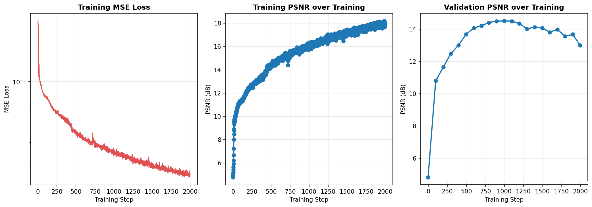
The training loss decreases steadily, showing successful optimization. The network learns to represent the 3D structure and appearance of the shoe from the multi-view images.
I rendered a circular camera path around the object to create a novel view video:
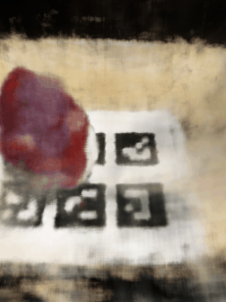
The circular path was generated by:
The NeRF successfully synthesizes photorealistic views from these novel camera positions, demonstrating that it has learned a complete 3D representation of the scene. The interesting thing is that the NeRF creates highly accurate reconstructions even for the views where the tag was hidden; those views were not part of the training set.
This project successfully implements a complete NeRF pipeline, from camera calibration and 3D scanning to training and rendering neural radiance fields. Key achievements:
The project demonstrates the power of neural radiance fields for 3D scene representation and novel view synthesis. The learned implicit representation captures both geometry and appearance, enabling photorealistic rendering from any viewpoint.